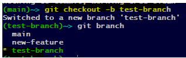

| Git Commands | Usage | Example | Description |
|---|---|---|---|
| git config |
git config --global user.name “[name]” git config --global user.email “[email]” |
 |
This command sets the author name and email address respectively to be used with your commits. |
| git init | git init [repository name] |  |
This command is used to start a new repository. |
| git clone | git clone [url] |  |
This command is used to obtain a repository from an existing URL. |
| git add | git add [file] |  |
This command adds a file to the staging area. |
| git add | git add . |  |
This command adds all to the staging area. |
| git commit | git commit -m “[ Type in the commit message]” | This command records or snapshots the file permanently in the version history. | |
| git status | git status |  |
This command lists all the files that have to be committed. |
| git log | git log |  |
This command is used to list the version history for the current branch. |
| git branch | git branch | This command lists all the local branches in the current repository. | |
| git branch | git branch [branch name] | This command creates a new branch. | |
| git branch | git branch -d [branch name] | This command deletes the feature branch. | |
| git checkout | git checkout [branch name] | This command is used to switch from one branch to another.. | |
| git checkout | git checkout -b [branch name] |  | This command creates a new branch and also switches to it. |
| git merge | git merge [branch name] | This command merges the specified branch’s history into the current branch. |